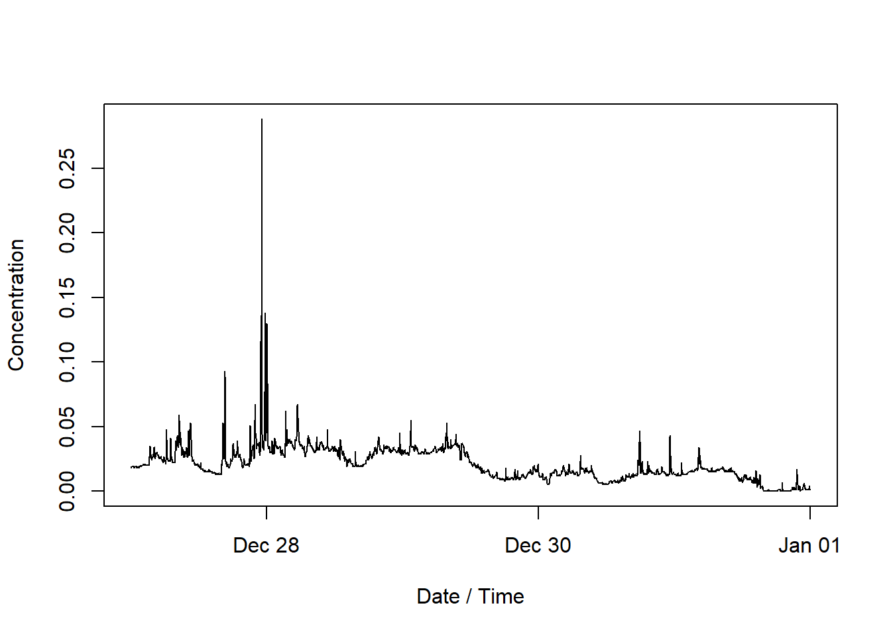

2 + 2[1] 4SHM 377 — Hazardous Materials Management
Today we will use a real environmental monitoring dataset to answer a simple question:
What happened to ambient particle concentrations during five days of winter monitoring?
We will use R to:
The goal is not to become a programmer today.
The goal is to begin using R as a tool for environmental and hazardous materials data analysis.
We have repeated measurements of airborne particles collected during winter monitoring.
The measurements were collected approximately every two minutes from:
December 27 through December 31, 2019
Our question is:
What happened to ambient particle concentrations during these five days?
Before doing any analysis, we need to understand what the dataset contains.
The teaching dataset contains approximately 3,600 observations.
It contains two variables:
| Variable | Meaning |
|---|---|
date_time |
When the measurement was collected |
concentration |
Measured particle concentration |
The monitoring instrument measured particle concentration.
It did not identify the exact source of every particle.
This distinction is important.
Measurement does not equal source attribution.
If concentration increases, we can observe the increase.
We cannot automatically conclude what caused it.
Environmental and hazardous materials work often produces large amounts of data.
Examples include:
R gives us a way to organize, inspect, analyze, visualize, and communicate those data.
Another major advantage is reproducibility.
Instead of clicking through a series of menus and trying to remember what we did, we can save the commands used for the analysis.
R is a programming language and analytical environment used for:
RStudio is the interface we will use to work with R.
You will commonly see four areas:
Where we write and save our code.
Where R executes commands.
Shows objects currently available in R.
Tools for navigating files, viewing graphs, managing packages, and finding documentation.
One important habit for this course is:
Write your commands in a script rather than relying only on the Console.
The script becomes a record of what you did.
We will start very simply.
Run:
2 + 2[1] 4R receives the instruction and returns the result underneath the code.
Try another:
10 / 2[1] 5At its most basic level, working with R means:
We give R an instruction and R returns something.
We can also store information in R.
x <- 5Now ask R what is stored in x.
x[1] 5The symbol:
<-is called the assignment operator.
You can read this:
x <- 5as:
Store the value 5 in an object called
x.
We will use this idea constantly when working with datasets.
Our teaching dataset is:
winter-smoke-2019-12-27_to_2019-12-31.csvThe dataset contains measurements from December 27 through December 31, 2019.
For the first lab, we want the process of getting the dataset to be simple.
Later in the course we can expand our GitHub workflow.
We can use read.csv() to import the file.
winter_smoke <- read.csv(
"winter-smoke-2019-12-27_to_2019-12-31.csv"
)Read that command from right to left.
R will:
winter_smokeWe now have data inside R.
One of the most important habits in this course will be:
Look at your data before analyzing it.
We want to know:
Use head().
head(winter_smoke) date_time concentration
1 2019-12-27 00:01:59 0.018
2 2019-12-27 00:03:59 0.019
3 2019-12-27 00:05:59 0.019
4 2019-12-27 00:07:59 0.019
5 2019-12-27 00:09:59 0.019
6 2019-12-27 00:11:59 0.019This shows the first several observations.
Look at the output.
Ask yourself:
What does one row appear to represent?
Use tail().
tail(winter_smoke) date_time concentration
3595 2019-12-31 23:49:59 0.002
3596 2019-12-31 23:51:59 0.001
3597 2019-12-31 23:53:59 0.004
3598 2019-12-31 23:55:59 0.002
3599 2019-12-31 23:57:59 0.001
3600 2019-12-31 23:59:59 0.001Looking at both the beginning and end of a dataset can help us confirm that the file contains the time period we expected.
Use names().
names(winter_smoke)[1] "date_time" "concentration"We expect to see:
date_time
concentrationUse dim().
dim(winter_smoke)[1] 3600 2R reports:
rows columnsThe rows represent observations.
The columns represent variables.
For this dataset, each row represents one monitoring measurement.
Use str().
str(winter_smoke)'data.frame': 3600 obs. of 2 variables:
$ date_time : chr "2019-12-27 00:01:59" "2019-12-27 00:03:59" "2019-12-27 00:05:59" "2019-12-27 00:07:59" ...
$ concentration: num 0.018 0.019 0.019 0.019 0.019 0.019 0.019 0.019 0.019 0.019 ...This tells us several things at once, including:
This is one of the most useful commands to run immediately after importing a dataset.
The date_time variable may initially be imported as text.
If that happens, R does not yet understand that those values represent time.
We can convert the variable.
winter_smoke$date_time <- as.POSIXct(
winter_smoke$date_time
)Then check the structure again.
str(winter_smoke)'data.frame': 3600 obs. of 2 variables:
$ date_time : POSIXct, format: "2019-12-27 00:01:59" "2019-12-27 00:03:59" ...
$ concentration: num 0.018 0.019 0.019 0.019 0.019 0.019 0.019 0.019 0.019 0.019 ...This introduces another important habit:
Do not assume your code worked. Check.
Before calculating averages or making graphs, we should inspect the range of the measurements.
First, find the minimum.
min(winter_smoke$concentration)[1] 0Now find the maximum.
max(winter_smoke$concentration)[1] 0.288The observed concentration range in this teaching dataset is approximately:
0.000 to 0.288At this stage, we should ask:
Do these measurements appear plausible?
Suppose one concentration is much higher than most of the others.
Should we immediately delete it?
No.
An unusual value could represent:
Before removing a value, ask:
Unusual does not automatically mean incorrect.
Now that we have inspected and checked the dataset, we can begin summarizing it.
mean(winter_smoke$concentration)[1] 0.02079694The mean gives us one way to describe the center of the measurements.
But one number cannot show us how concentrations changed through time.
median(winter_smoke$concentration)[1] 0.018The median gives us another measure of the center.
Compare the mean and median.
Are they similar?
If not, what might that suggest about the distribution of measurements?
min(winter_smoke$concentration)[1] 0max(winter_smoke$concentration)[1] 0.288R can calculate several descriptive statistics at once.
summary(winter_smoke$concentration) Min. 1st Qu. Median Mean 3rd Qu. Max.
0.0000 0.0130 0.0180 0.0208 0.0300 0.2880 Look at the output.
What information does R provide?
What information is still missing?
A numerical summary can tell us about:
But it cannot tell us when concentrations changed.
For that, we need to look at the measurements through time.
Because these measurements were repeatedly collected over several days, a time series graph is a natural first visualization.
We will place:
time on the x axis
and
concentration on the y axis
plot(
winter_smoke$date_time,
winter_smoke$concentration,
type = "l",
xlab = "Date / Time",
ylab = "Concentration"
)
The graph will appear directly underneath the code.
This is one of the advantages of using a Quarto document.
The code, result, and explanation remain together.
Look at the code again.
plot(
winter_smoke$date_time,
winter_smoke$concentration,
type = "l",
xlab = "Date / Time",
ylab = "Concentration"
)We told R:
date_time on the x axisconcentration on the y axisYou may notice that we have not added a concentration unit.
That is intentional.
We still need to confirm the measurement scale and units from the original project documentation.
Until that information is verified, we should not invent a unit.
If we have not verified something, we should not present it as fact.
Study the graph before trying to explain it.
Ask:
The first step is observation.
A statement such as:
Particle concentration varied throughout the monitoring period, with periods of relatively low concentration interrupted by higher measured concentrations.
is an observation based on the dataset.
A statement such as:
Residential wood burning caused the peaks.
is a source attribution claim.
The dataset alone does not prove that.
From the measurements we can examine:
From this dataset alone, we cannot determine:
Additional information would be needed.
The monitoring results may lead us to new questions.
For example:
This is how data analysis often works.
One answer produces better questions.
Our original question was:
What happened to ambient particle concentrations during five days of winter monitoring?
We now have several ways to answer that question.
We:
Throughout this course, we will repeatedly use a workflow like this:
Question
↓
Data
↓
Check
↓
Describe / Analyze
↓
Visualize
↓
Interpret
↓
Communicate / ManageThe specific commands will change.
The reasoning process will remain similar.
In hazardous materials management, we may begin with questions about:
Material
↓
Properties
↓
Source / Activity
↓
Release
↓
Environmental Medium
↓
Transport
↓
Exposure
↓
Dose
↓
EffectsMonitoring provides evidence about parts of that system.
Data analysis helps us move from measurements toward evaluation and decision making.
Hazardous Materials Problem
↓
Measurement
↓
Data
↓
Evaluation
↓
Interpretation
↓
Management / ControlOne reason we are using R is that the analysis itself can be saved.
For example:
winter_smoke <- read.csv(
"winter-smoke-2019-12-27_to_2019-12-31.csv"
)
head(winter_smoke)
summary(winter_smoke$concentration)
plot(
winter_smoke$date_time,
winter_smoke$concentration,
type = "l"
)These commands provide a record of what we did.
Someone can inspect the code and understand how the analysis was produced.
Later, this idea will lead naturally into Quarto reports.
Today you encountered commands such as:
read.csv()
head()
tail()
names()
dim()
str()
as.POSIXct()
min()
max()
mean()
median()
summary()
plot()You do not need to memorize all of these immediately.
What matters more is understanding why we use them.
Ask yourself:
What is my question?
What does my dataset contain?
Did the data import correctly?
Do the measurements look reasonable?
How can I describe them?
How can I visualize them?
What does the evidence show?
What can I not conclude?In this first virtual lab, you:
We are not learning R for the sake of learning R.
We are learning how to use data to investigate, evaluate, and communicate hazardous materials problems.
We will continue building on the same workflow throughout SHM 377.
Over time, we will move from basic R commands toward:
R
↓
R scripts
↓
data analysis
↓
visualization
↓
interpretation
↓
reproducible Quarto reportsWe do not need to learn everything at once.
We start with the question.
Then we use the data to work toward an answer.